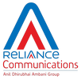

Experience
14 Years Experience Telecom Engineering!
I have excellent track record in RF domain.Extensive background in RF with multi vendor and operator’s experience. Wide experience in LTE, UTRAN, GERAN and WCDMA in Network Planning and Optimization
Nexius Solutions
Senior RF Engineer- RF IV
Currently working at Nexius Solutions. Responsible for LTE Tri-Band OptimizationResponsible for maintaining KPI's on Site/Cluster/Market Level.Worked on LTE Triband Optimization project for Chicago Indianapolis market. Cluster level analysis. Pre drives, drive route preparation, Drive data post processing in Windcatcher, Layer 3 messaging, KPI trending using Tableau. Provide recommendation to sprint based on drive data on improving the drop call rate on LTE using physical and parameter changes on the sites. Post drive analysis and executive level presentations showing improvement in the cluster performance.Golden parameter compliance audit for 3G and 4G. Tools: Samsung BSM, LSMR, Tableau, Samsung Cockpit, Reveal, Falcon.
NSN - Nokia Solutions and Networks
RF LEAD
Working for different FDD/TDD LTE Trials for Optimization, Deployments and KPIs finalization.Designing the solution architecture for LTE based Broadband Networks.Planning/Optimization & Dimensioning for LTE networks.Lead the Bharti TD LTE Roll out in Pune, Maharashtra, India for around 400 sites.Lead the Bharti TD LTE roll out for Mumbai, India for around 1400 sites.
Manager – RF Planning and Optimization
MTS Group
Completed all regulatory requirement by achieving all targets for roll out obligations and technical criterias Responsible for planning a green field network with 550+ sites.Responsible for working closely with ZTE and sharing vendors to meet all technical/regulatory requirement on time.
Manager RF NWS
Idea Cellular Ltd
Installation, Commissioning and Acceptance Testing. Responsible for preparing & maintaining the Capex and Opex for each quarter of the respective financial year. Successfully conducted Regulatory testing. Got the “IDEA EXCELLENCE AWARD” for successful completion of Regulatory testing and best performance in Network.
Senior Consultant
AIRCOM International
Wireless Network Design Capacity Sites, Infill Sites, Highway and Railway Coverage Planning.Interacting with customer regarding Site planning Leading a time of 9 Consultants, located at different customer location.
Consultant_CMEX(Project Manager)
Infosys
Was part of a business vertical that caters to important assignments in the communication, media and entertainment areas for clients across the globe. Worked under the British Telecom Global Services that is one of the LOB of British Telecom in which I needed to manage the planning portion for GVPN N/w of BT that is MPLS and VPN networking. Handled British Telecom 2months project on ONE VOICE SOLUTION based in U.K.(London)
Responsible for monitoring Network Planning and Optimization. Responsible for planning of new site with the help of Radio Plan’s planning tool of ACP(Automatic Cell Planning-WINES-3.6), Repeater or Micro Cell according to the clutter area, market inputs or client’s need. In-building solutions EXPERT

RF Engineer
Reliance Communications
Worked as an outsourced employee in the company Balaji from June 2001 to July 2005 for Reliance. Then joined Reliance Infocomm on rolls. Monitoring Drive test results for network health with the help of Agilent and Map Info Software. Drive data analysis for IMRB and TEC Testing. Planning of Frequency Shift Repeaters & Optical Repeaters for remote areas and for the less populated areas, also commissioning, optimization & troubleshooting of the Repeaters with the help of their respective software & other methods.
That's it. Thank You for Visiting!.